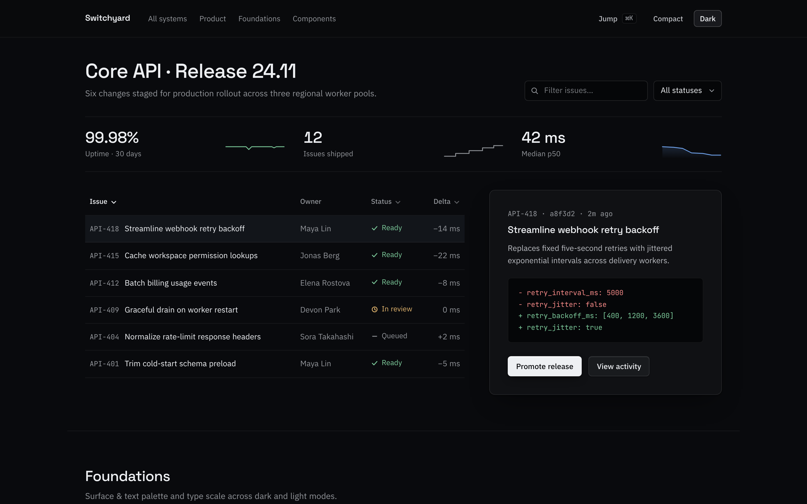
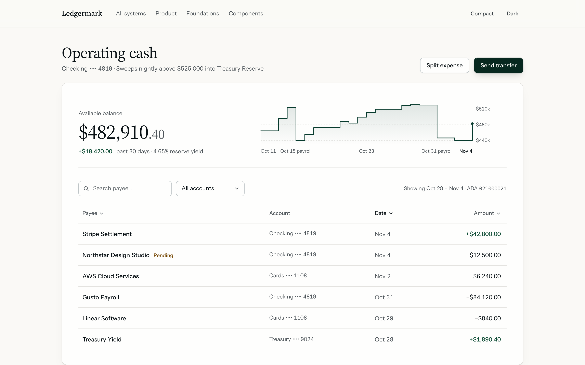
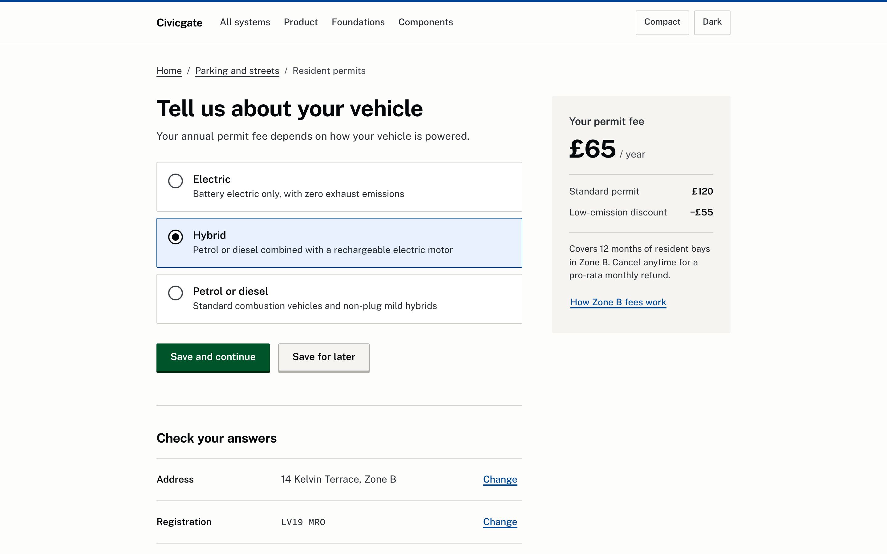
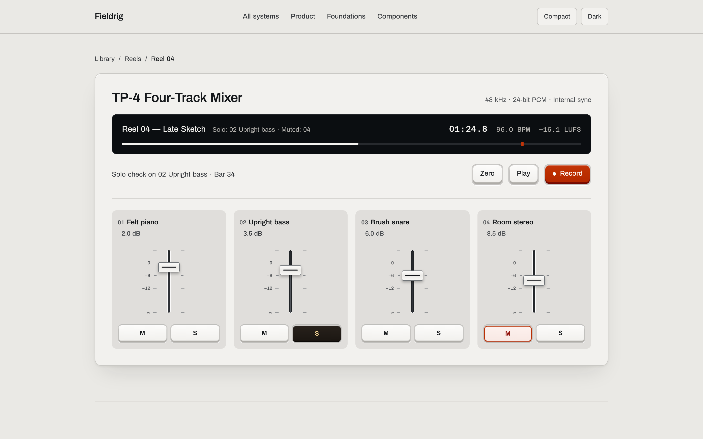
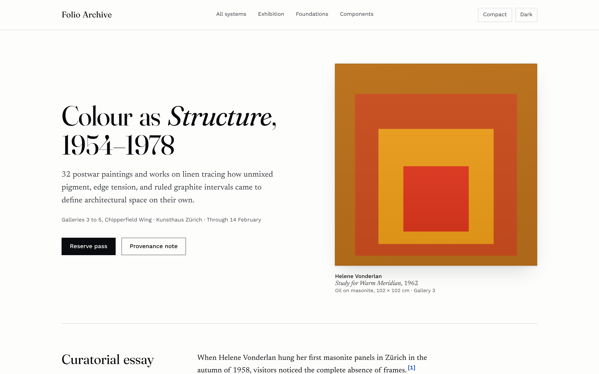
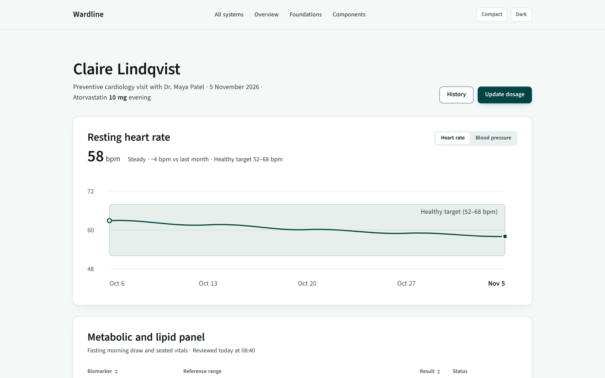

Switchyard
Engineers stage API releases alongside latency sparklines, filtering rollout issues on the left while reviewing retry-backoff diffs beside them.
We designed and built six design systems to show how layout, typography, and colour restraint serve very different jobs.
Each system pairs a working product screen with a matching marketing and media component guide across light and dark modes.
We built six working screens covering API deploys, operating cash, parking permits, four-track mixing, art exhibitions, and cardiology visits.

Engineers stage API releases alongside latency sparklines, filtering rollout issues on the left while reviewing retry-backoff diffs beside them.

Finance teams track daily operating cash steps, queue wire transfers, and split expenses above a sortable multi-account ledger.

Residents renew low-emission parking permits in one clear question column paired with a live Zone B annual fee summary.

Musicians mix four vertical studio stems with solo and mute latches beneath a timecode bar and armed record trigger.

Visitors read a Kunsthaus Zürich essay for Colour as Structure beside colour-field paintings, footnote notes, and room checklists.

Patients and clinicians review 30-day resting heart rates inside target bands above fasting lipid reference ranges and dosage controls.
Each system pairs an open-licence typeface stack with its own colour palette and control reference.
| System | Palette | Typefaces | Reference view |
|---|---|---|---|
| Switchyard | Dark slate, white primary, periwinkle | Space Grotesk, IBM Plex Sans, JetBrains Mono | Horizontal release spec sheet |
| Ledgermark | Warm off-white and forest green | Source Serif 4, Instrument Sans, IBM Plex Mono | Treasury workflow reference |
| Civicgate | White paper, green confirm, cobalt | Public Sans and Source Code Pro | Service rules and validation |
| Fieldrig | Neutral warm grey and vermilion | Archivo and Azeret Mono | Four studio hardware modules |
| Folio Archive | White ground, black ink, cobalt | Fraunces, Newsreader, Work Sans | Numbered catalogue figures |
| Wardline | Cool off-white and dark teal | Source Sans 3 and Fira Code | Cardiology clinic workflows |
Every system pairs its product workspace with a matching marketing component guide using self-hosted open-licence fonts. Read the reusable design system skill, the research synthesis, and the source repository on Google Depot.